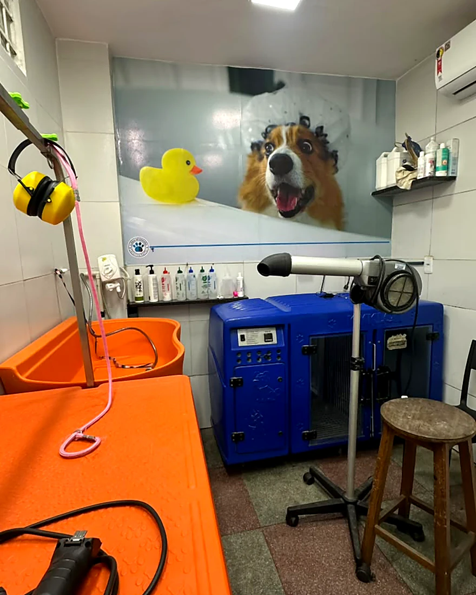

Banho e tosa
O banho acontece a poucos passos do consultório. O que aparece na pele não espera a próxima consulta.
Uma vermelhidão, uma pulga, um nódulo: vai direto para a veterinária, no mesmo dia.